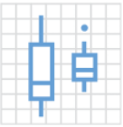

Your Turn #2

What is the name of this kind of plot?
Type the answer into the chat!


ggplot(data = covid_testing) +
geom_histogram(mapping = aes(x = pan_day))
A Tidy Data Frame

A data set is tidy if:
- Each variable is in its own column
- Each observation is in its own row
- Each value is in its own cell
Geom Functions
geom_histogram()

geom_dotplot()

geom_bar()

geom_boxplot()
geom_point()

geom_line()
Aesthetics

Your Turn #4
In addition to x/y position and color, what other aesthetic mappings can you think of?
(Hint: things that don’t change to fit the data, like the background color of a graph, aren’t mappings).
Type your answers in the chat!
Your Turn #5
Open 02 - Visualize.Qmd. Work through the exercises of the section titled “Your Turn 5”.
Stop when it says “Stop Here”.
Click “yes”  when you’re done!
when you’re done!
05:00

ggplot(data = covid_testing) +
geom_histogram(mapping = aes(x = pan_day), fill = "blue")
ggplot(data = covid_testing) +
geom_histogram(mapping = aes(x = pan_day,
fill = result))Notice what’s inside the geom_histogram():
mapping = aes(x = pan_day, fill = result)Is “fill” inside or outside of mapping?
ggplot(data = covid_testing) +
geom_histogram(mapping = aes(x = pan_day),
fill = "blue")Notice what’s inside the geom_histogram:
mapping = aes(x = pan_day), fill = "blue"Is “fill” inside or outside of mapping?


Your Turn #6
Return to 02 - Visualize.qmd. Work through the exercises of the section titled “Your Turn 6.”
Click “yes” when you’re done!
05:00
Recap
ggplot2 is a package that provides a grammar of graphics. You can create any type of plot using a simple template to which you provide:
A tidy data frame, in which each variable is in its own column, each observation is in its own row, each value is in its own cell;
A geom function, which tells R what kind of plot to make; and
Aesthetic mappings, which tell R how to represent data as graphical markings on the plot.
Saving Plots

Position Adjustments
ggplot(covid_testing) +
geom_histogram(
mapping = aes(x = pan_day, fill = result),
position = position_dodge()
)
Themes
ggplot(covid_testing) +
geom_histogram(
mapping = aes(x = pan_day, fill = result),
position = position_dodge()
) +
theme_light()
Scales
library(colorspace)
cols <- c(
"invalid" = "grey80",
qualitative_hcl(2, palette = "dark3")
)
ggplot(covid_testing) +
geom_histogram(
mapping = aes(x = pan_day, fill = result),
position = position_dodge()
) +
theme_light() +
scale_fill_manual(values = cols)
Coordinate Systems
ggplot(covid_testing) +
geom_histogram(
mapping = aes(x = pan_day, fill = result)
) +
theme_light() +
scale_fill_manual(values = cols) +
facet_wrap(~demo_group) +
coord_polar()
Titles and Captions
ggplot(covid_testing) +
geom_histogram(
mapping = aes(x = pan_day, fill = result)
) +
theme_light() +
facet_wrap(~demo_group) +
ggtitle(label = "COVID19 Test Volume",
subtitle = "Faceted by Demographic Group") +
xlab("Day of Pandemic") +
ylab("Number of Tests")

Next Up: Transform
Our next topic is: